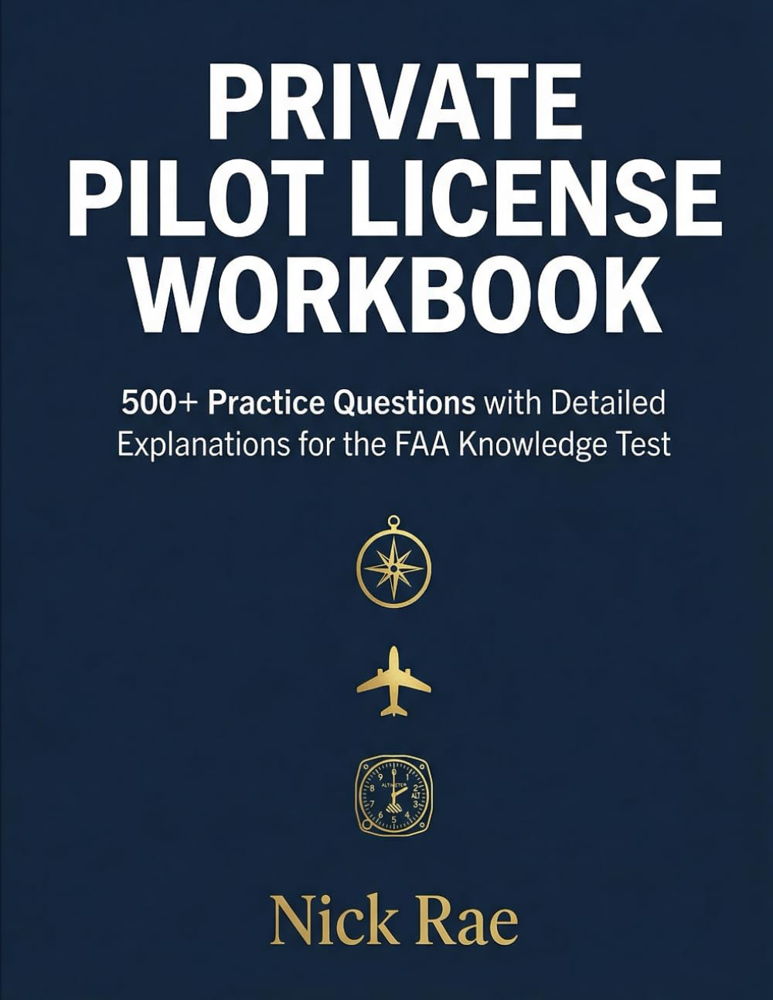
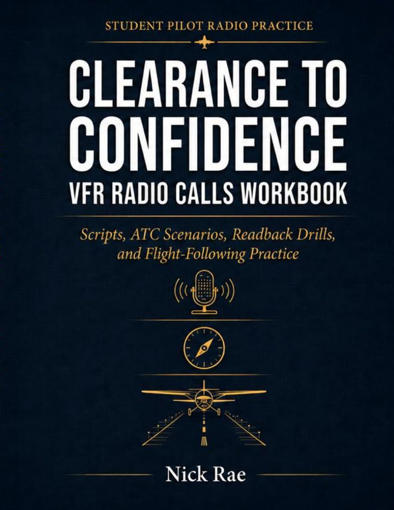
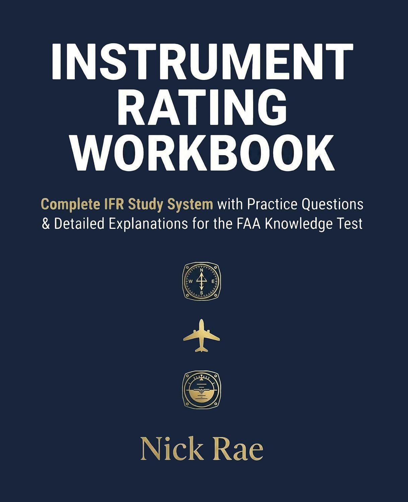
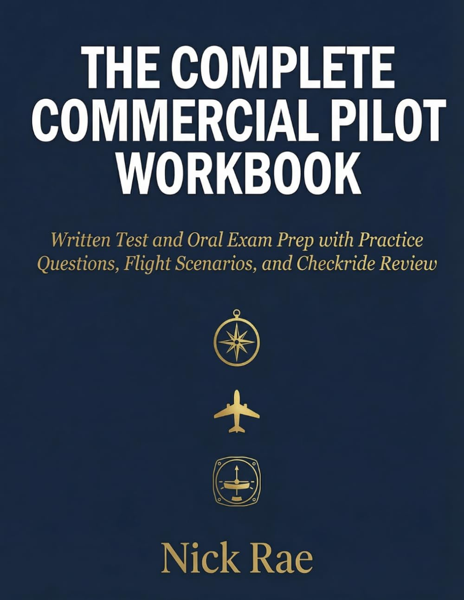
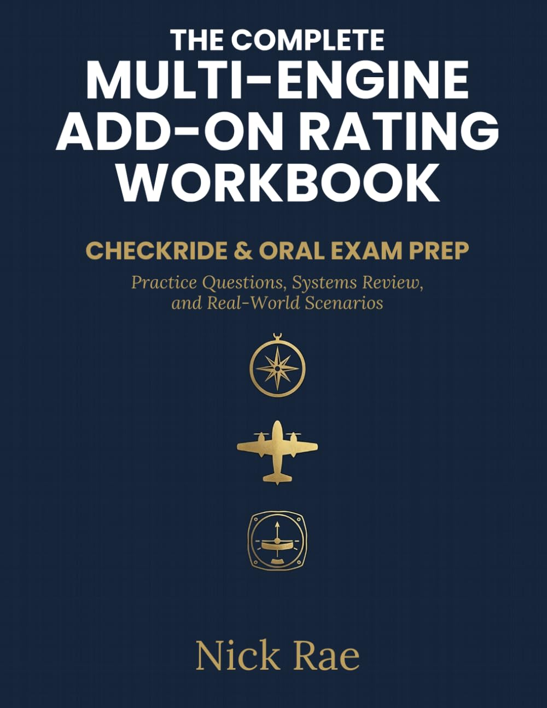

PPL foundations
Private Pilot License Workbook
500+ practice questions with explanations for private-pilot knowledge study and out-loud oral practice.
Aviation pilot workbook series
Private, instrument, commercial, multi-engine and VFR radio-call study. Practice questions, explain your decisions, and check the references with your instructor.
Browse the full Amazon catalog →


One rating. One next step.
Start with your current rating or weak spot. Each workbook has its own scope, preview guidance and format choices.
Build written-test fluency and oral-exam explanations before checkride prep gets noisy.
See PPL workbook →Review weather, procedures, charts, systems, and scenario decisions.
See Instrument workbook →Train commercial judgment, maneuvers, ACS knowledge, and explanation reps.
See Commercial workbook →Work Vmc, OEI, PA-44 flows, engine-out calls, and oral traps.
See Multi-Engine workbook →Practice call-building, expected replies, readbacks, CTAF, and towered flows.
See Radio Calls workbook →Try the Instrument workbook question below, then reveal its original answer. For a broader look at any workbook’s contents, open its Amazon listing and use “Read Sample” when available. Check the selected format and publication details before buying.
Choose a workbook that complements your instructor-led study. Use current FAA publications and the applicable ACS to check references. The free IFR pack is a separate study resource, not an excerpt from either workbook.
Try the Instrument sample → · PPL workbook and preview guidance →
Confirm your email to receive the cards. Privacy details · Open the signup form →
Choose a rating, inspect the teaching, then choose your format. Amazon shows the current price and availability for each edition. Kindle Unlimited access, where offered, is separate from buying the Kindle edition.
500+ practice questions with explanations for private-pilot knowledge study and out-loud oral practice.
Study IFR weather, charts, procedures and scenario decisions, then work through a source-labeled VOR example.

Written and oral preparation with practice questions, flight scenarios and commercial-pilot judgment.

Seminole-focused review of Vmc, one-engine-inoperative operations, systems and oral-exam reasoning.
Build calls, anticipate ATC replies and practice readbacks for towered and non-towered flying.
Read a question. Explain the answer.
This excerpt is separate from the product cards so you can compare the books first, then take your time with the explanation.
Exercise 2.6 — VOR Checks, item 2 only. A tiny promotional excerpt from Instrument Rating Workbook, First Edition — 2026, Version 1.0 (February 2026). Prompt: PDF page 46; consolidated answer: PDF page 153.
Page references are 1-based physical pages in the 158-page paperback interior, not Kindle locations. Selected text is exact; layout is reformatted, not a reproduction of the full pages. Other exercise items are omitted.
2. You perform a dual VOR check. VOR #1 reads 271° and VOR #2 reads 268°. Is this acceptable?
☐ Yes ☐ No — The difference is ______°. Maximum allowed: ______°.
Consolidated answer key, item 2:
2) Difference is 3°. Maximum 4°. Yes, acceptable.
Source check — added for this sample: 271° − 268° = 3°, within the 4° maximum variation in 14 CFR §91.171(c). This assumes two VOR units independent except for the antenna, tuned to the same VOR ground facility. Passing this comparison alone does not establish aircraft airworthiness or authorize a flight.
Checked September 10, 2026 against §91.171(c) and FAA AIM 1-1-4. Limited to this excerpt; not a full-book review or CFII endorsement.
Download this sample PDF (1 page) · See the full workbook on Amazon →
This workbook is designed for training and educational purposes. While every effort has been made to ensure accuracy, the author assumes no responsibility for errors or omissions. For actual flight training and testing, always consult current official FAA publications.
FAA Disclaimer: This material is not endorsed by the Federal Aviation Administration.
From PDF page 2. Copyright © 2026 Nick Rae. All rights reserved. Sample published with author permission.
Training and educational use only. Consult current official FAA publications and your instructor. Not FAA endorsed.
Free IFR scenario pack
Source-anchored cards for currency, alternates, fuel, readbacks, holding, MDA discipline, and equipment checks. It is a study aid, not flight instruction.
Amazon controls current availability and price display. Open the product page before buying.
Swipe left/right to compare all columns. Keyboard: focus the table, then use the arrow keys.
| Workbook | Best for | What it trains | Format / preview path |
|---|---|---|---|
| Private Pilot License Workbook | Student pilots and rusty fundamentals | Knowledge-test review, explained answers, oral-exam thinking | Paperback · Kindle · Details & preview |
| Instrument Rating Workbook | IFR students and procedure review | Weather, charts, regulations, approach decisions, systems | Paperback · Kindle · Details & preview |
| Complete Commercial Pilot Workbook | Commercial candidates | ACS review, commercial judgment, maneuvers, scenario answers | Paperback · Kindle · Details & preview |
| Multi-Engine Add-On Workbook | PA-44 and multi-engine add-on pilots | V-speeds, Vmc, OEI operations, engine-out procedures | Paperback · Kindle · Details & preview |
| Clearance to Confidence: VFR Radio Calls | Student, rusty, and radio-tense pilots | Call-building, readbacks, CTAF, towered/non-towered flows | Paperback · Kindle · Details & preview |
These are focused study and checkride-prep tools. Use them with FAA handbooks, the applicable ACS, your instructor, and real flight training. Read a short section, answer without peeking, then explain why the answer survives the next question.
Buy the one matching the checkride, rating, or weak spot in front of you: PPL, Instrument, Commercial, Multi-Engine, or VFR Radio Calls. Start with the rating you are studying now.
Both, but the real value is explanation practice and oral-exam thinking when a DPE asks why your answer is correct.
No. Use them with FAA handbooks, ACS standards, your instructor, and real flight training. A workbook is a tool, not a CFI in paperback clothing.
Each listed workbook has separate paperback and Kindle links. Check Amazon for current pricing, regional availability and any Kindle Unlimited offer.